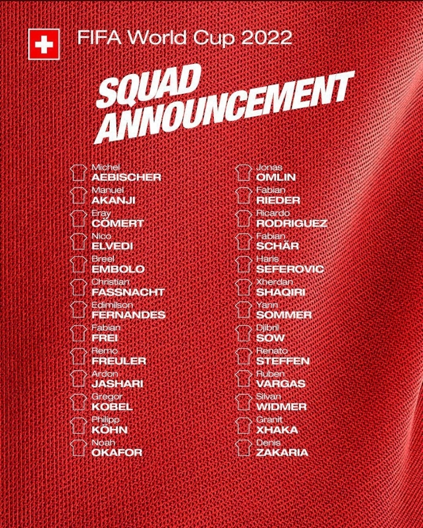
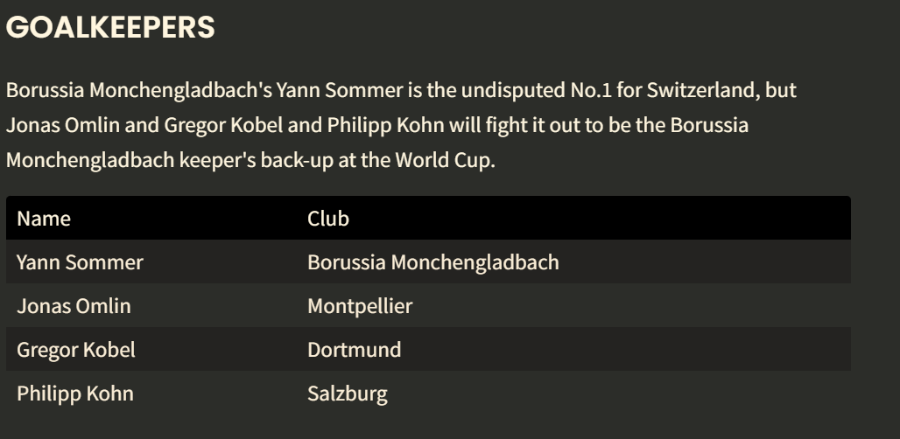
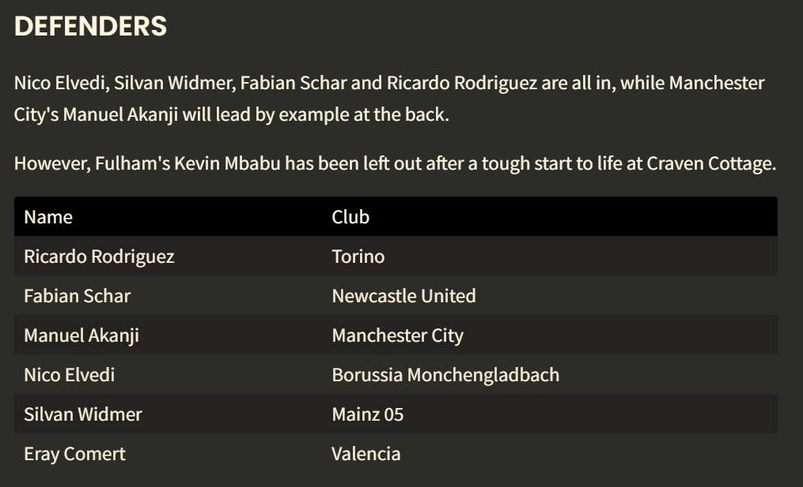
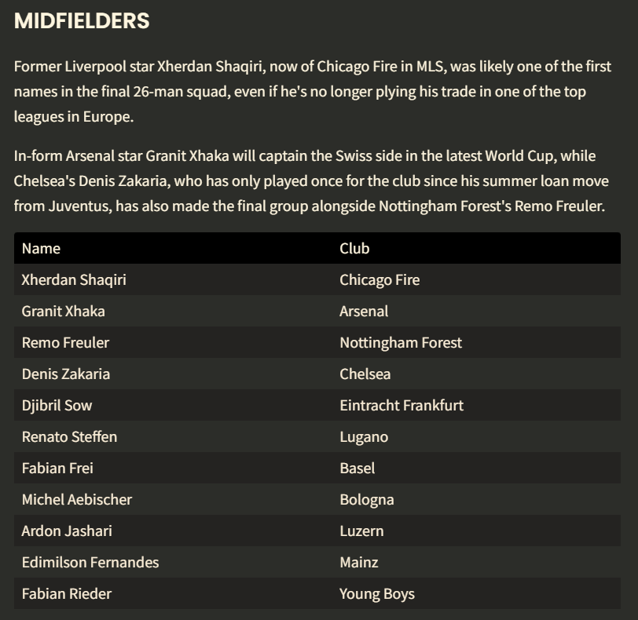
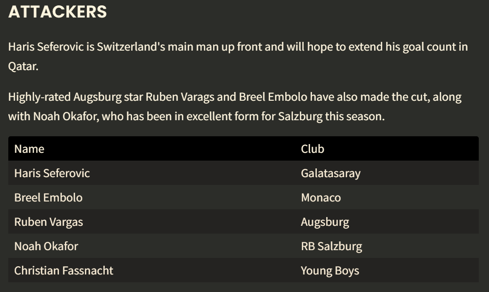
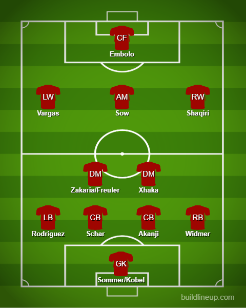

Squad Reaction - Switzerland

Credit to Goal.com for the simplification




Fairly decent time in the last Euros where they managed to knock out the current WC defending champions France on penalties. The squad is fairly decent with a few young options up front like Okafor and Embolo and a GK in Kobel. Sommer is injured but will be back in time for their first fixture maybe it could be time to trust in Kobel a little more. In defense, Mbabu is not present as he is not in form at Fulham. In the center, it’s Akanji and Schar with Widmer at RB and Ricardo Rodriguez at LB. The usual formation for them is a 4-2-3-1. The midfield pivot would be mostly Xhaka(Amazing form for Arsenal lately) and the second one can be between Zakaria and Freuler. Moving forward we have Big Shaq at RW and in CAM Sow has been used there so expect to maybe see him there again there and it is mostly Vargas on the left. Up at ST, we have Breel Embolo who has I think nailed down his spot there. Really good pace and is a decent finisher. On the bench, they have a good target man in Seferovic as well and one to watch in Okafor.
The lineup:
